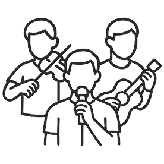

음악은 일상의 먼지를 씻어준다.
음악의 아버지라 불리는 독일의 작곡가 바흐가 남긴 명언입니다.
그만큼 음악 공연은 우리의 삶을 더욱 풍요롭게 해 주는 특별한 선물과도 같습니다.
롯데콘서트홀이 전해 드리는 몇 가지 공연 예절 안내를 통해
좋은 공연이 전하는 진한 울림과 깊은 감동의 순간을 만끽하시기 바랍니다.
-
제1장 공연 시작 전
- schedule 공연장 도착은 늦어도 30분 전까지, 객석 입장은 10분 전까지 완료해 주세요.
- 운동 전 스트레칭이 필요하듯, 공연을 보기 전에도 약간의 준비가 필요합니다. 입장권을 수령하시고 화장실도 다녀오신 후 여유 있게 공연을 즐기세요. 연주 중에는 공연장 입장이 불가능합니다. 혹시라도 늦게 도착하신 경우에는 침착하게 안내원의 도움을 받아주시고, 특히 입장 시에는 이미 착석하신 다른 관람객에게 방해가 되지 않도록 안내원이 유도하는 좌석 구역에서 관람해 주시기 바랍니다.
- escalator_warning 어린이 동행 시, 입장가능 연령을 반드시 확인해 주세요.
- 공연 감상의 최적화를 위해 관람하시고자 하는 공연에 대한 정보를 미리 확인하시고 어린이 입장 가능 여부를 숙지하여 주세요. 관람 연령 제한에 따른 환불은 불가하오니 예매 전 미리 확인해 주시기 바랍니다. 어린이를 위해 특별히 기획된 공연을 제외한 대부분의 공연에 취학 전 어린이는 입장이 제한됩니다. 예매 시에 반드시 입장 가능 연령을 확인해 주시기 바랍니다. 취학한 어린이 관객도 입장권은 반드시 구매하여야 하며, 관람 시 다른 관객의 공연 관람에 불편을 끼치지 않도록 보호자께서는 세심한 주의를 기울여 주시기 바랍니다.
- no_food 음식물은 로비나 휴게 공간에서 드시기 바랍니다.
공연장 내부 음식물 반입은 엄격히 금지됩니다. - “공연 시간에 맞추느라 식사를 못했어요”, “차 한잔의 여유를 즐기면서 공연을 관람하면 안 되나요?” 등 음식물 반입에 대한 문의를 하시는 경우가 간혹 있습니다. 그러나 공연장에는 일체의 음식물 반입이 되지 않습니다. 작은 부주의가 공연자는 물론 관객에게도 피해를 줄 수 있다는 점을 양해해 주시고, 음식물은 로비나 휴게실에서 드신 후 입장해 주시기 바랍니다.
- no_luggage 부피가 크거나 소리가 나는 물품은 물품보관소에,
소지품은 간단할수록 좋습니다. - 부피가 큰 짐이나 연주자에게 선물하기 위해 준비해 온 화환, 바스락거리는 재질의 쇼핑백 등은 물품보관소에 맡겨 주시기 바랍니다. 본인은 물론 다른 관람객도 편안하게 공연을 관람하실 수 있도록 협조해 주시기 바랍니다.
- mobile_off 공연 시작 전, 휴대폰은 잠시 꺼 두셔도 좋습니다.
- “띠리리리~”, “문자왔숑!” 모두가 집중하고 있는 순간, 어디선가 들려오는 경쾌한 휴대폰 벨소리나 효과음은 연주자의 집중력을 떨어뜨리고 공연 관람에 큰 방해가 됩니다. 공연 중에는 휴대폰의 진동음, 액정 불빛 조차도 관람에 방해가 되오니 공연 전에 휴대폰 전원은 반드시 종료해 주시기 바랍니다. 공연장에서는 아주 작은 불빛도 타인에게 실례가 될 수 있습니다. 쾌적한 공연 환경을 위해 휴대폰은 반드시 쉬게 해 주세요.
-
제2장 공연 시작 후
- chair 정해진 자리에 앉으시고, 빈자리를 탐내지 마세요!
- 지정된 좌석에서 공연을 관람하고 계시던 중, 더 좋은 자리가 비어 있는 것을 발견하셨나요? 하지만 본인의 지정 좌석에서 공연을 관람하시는 것이 예의일 뿐 아니라, 공연 중 자리를 이동하는 행동은 다른 관객의 공연 관람에 큰 방해가 됩니다. 자리 이동으로 다른 관객에게 불편함을 주는 일이 없도록 지정 좌석에서 공연을 관람하시기 바랍니다.
- voice_over_off 옆 사람과의 대화는 눈빛으로만 나눠 주세요.
- 공연 중에는 작은 속삭임도 다른 관람객의 몰입을 방해합니다. 아무리 작게 이야기한다고 해도, 공연장의 특성상 집중과 흐름을 깨는 소음이 될 수 있고 이는 연주자의 집중력을 흐리게 하고 관람객의 공연 감상에 피해를 줄 수 있으니, 공연 중에는 옆 사람과의 대화를 자제해 주시기 바랍니다.
- no_photography 사진촬영과 녹음, 녹화는 금지되어 있습니다.
- 공연장 내에서는 사전에 협의되지 않은 사진촬영과 녹음, 녹화 등이 엄격히 금지되어 있습니다. 공연 장면 뿐 만 아니라 무대 장치까지 모두 저작권 보호 대상이며, 셀카 촬영도 불가합니다. 공연의 감동은 눈과 귀, 마음으로만 느끼고 간직해 주시기 바랍니다.
-
제3장 공연 즐기기
- cheer 박수는 연주자가 관객에게 인사할 때 치세요.
- 연주에 있어 극도의 집중력이 필요한 작품의 경우 연주 중간에 나오는 박수 소리에 연주자나 관객의 집중력이 흐트러져 공연 흐름에 방해가 되는 경우가 있습니다. 박수는 모든 악장이 완전하게 끝난 뒤에 쳐 주시고, 잘 모르시는 경우라면 지휘자나 연주자가 관객에게 인사할 때 박수를 쳐 주십시오. 연주의 마지막 순간 아무 소리도 나지 않는 정적의 순간 또한 작품의 한 부분입니다. 연주자가 마지막 소리의 여운, 정적의 순간 까지도 모두 마친 후 관객에게 인사할 때 뜨거운 박수로 호응해 주시기 바랍니다.
- pan_tool_alt 지휘자의 손 끝을 쫓아가 보세요.
- 클래식 공연이 지루하게 느껴진다면 지휘자의 동작 흐름과 손 끝을 따라가 보세요. 음악의 흐름을 시선으로 느끼다 보면 금세 음악의 즐거움에 빠져들게 됩니다.
- music_cast 롯데콘서트홀에서만 만끽할 수 있는 선율을 즐겨보세요.
- 세계 최고 수준의 음향, 나가타 어쿠스틱! 음악의 선율에 집중하다 보면 어느덧, 완벽한 소리의 감동이 파도처럼 밀려오게 될 거예요.
알아두면 유용한 환호
-

- 연주자가
남성 혼자인 경우 - 브라보!
- 연주자가
-
- 연주자가
여성 혼자인 경우 - 브라바!
- 연주자가
-

- 남성 복수의 단체연주자
- 브라비!
-
- 여성 복수의 단체연주자
- 브라베!